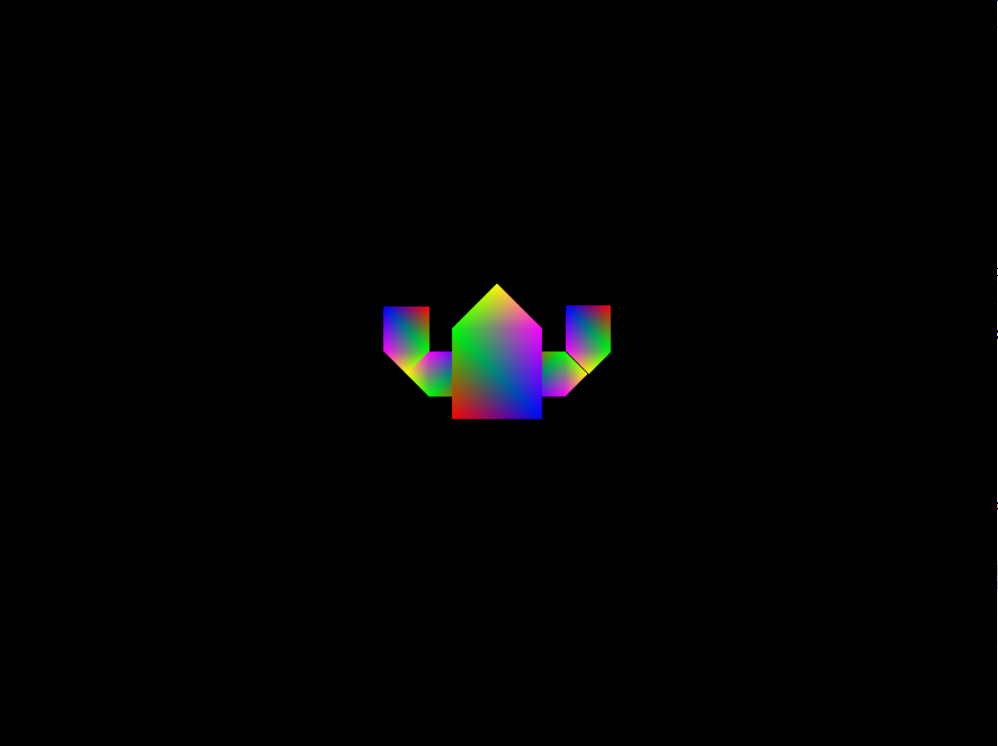
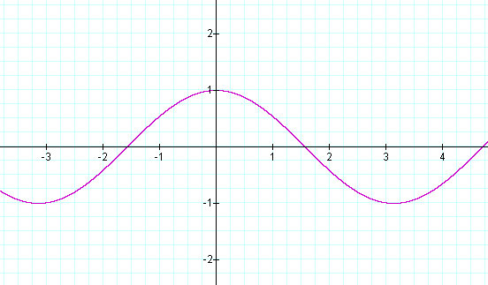
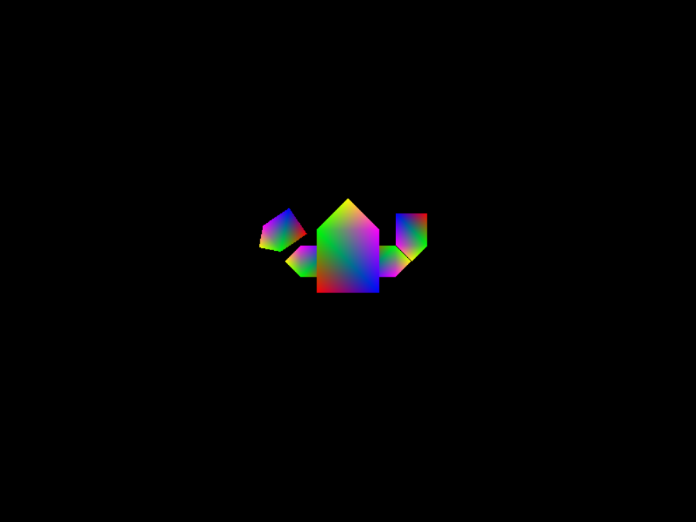
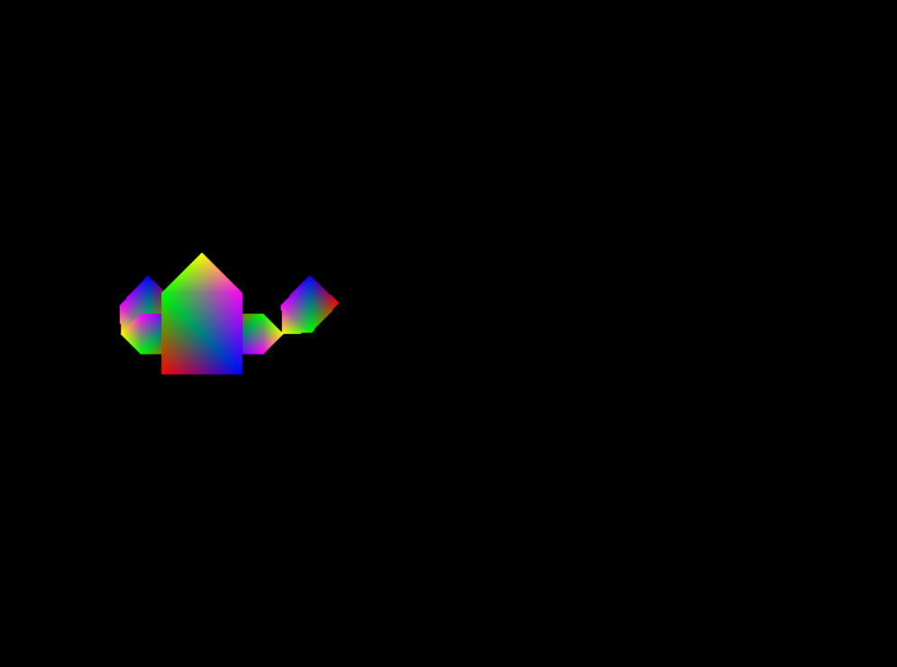
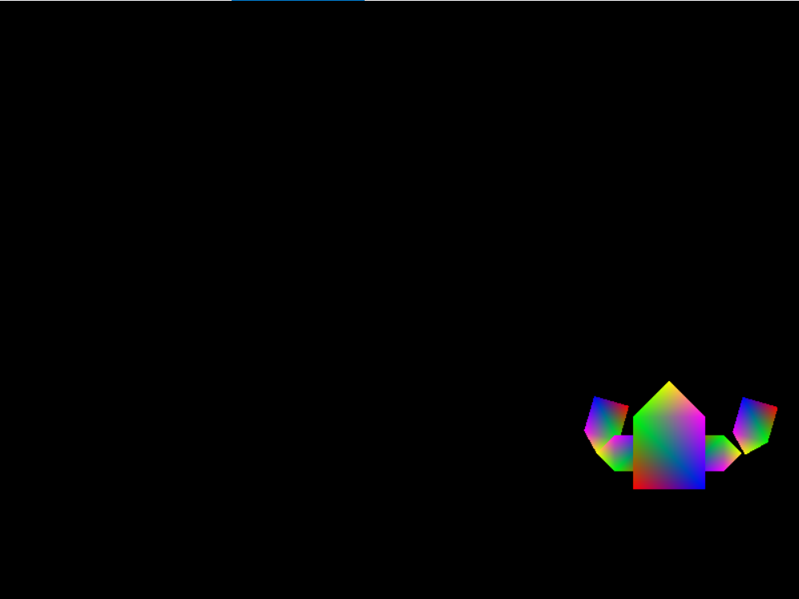

COMP 2501 - Winter 2014 Tutorial #4
Movement
Description:
The purpose of this tutorial is to familiarize yourself with the movement of objects in 2D space.
To get credit for the tutorial you must complete, or make significant progress, on the problems provided and demonstrate your results to the tutorial TA.
If you cannot complete the tutorial in the time allotted you may demonstrate the completed results to the TA during their office hours.
These tutorials are based on the Rastertek set of tutorials.
Instructions:
Overview
Open Microsoft Visual Studio 2012 and open the project found in the tutorial4 folder. Run the project (hit F5), it should build and open a window containing a rainbow robot body. This body is similar to the one we began constructing in tutorial 3, but with added body parts. Our robot now has two arms in two segments each. You can close this window by pressing Esc.

Take a look at graphicsclass.cpp. Our code is very similar to how it looked at the end of tutorial 3, except for a few notable additions.
Check out the Render() method. You should notice a key change; we are now keeping track of time:
// Update our time
static float t = 0.0f;
static DWORD dwTimeStart = 0;
DWORD dwTimeCur = GetTickCount();
if( dwTimeStart == 0 )
dwTimeStart = dwTimeCur;
t = ( dwTimeCur - dwTimeStart ) / 1000.0f;
GetTickCount() returns the amount of milliseconds that have passed since the system was started, and dwTimeStart stores that value the first time the Render() function is called. Our variable t represents the amount of seconds that have passed since we started rendering. We can use t to make our robot move.
After the following piece of code:
// Body
XMStoreFloat4x4( &worldBody, XMMatrixScaling(0.5f, 0.5f, 1.0f) );
Add this:
// Move body
XMStoreFloat4x4( &worldBody, XMMatrixTranslation(8*sin(t), 0.0f, 0.0f ) * XMLoadFloat4x4(&worldBody) );
Run the program. Your robot should now be moving back and forth along the x axis. All we've done is apply a translation to the body. Notice the entire robot moves because the position of the arms is defined relative to the position fo the body. We are using the sine function to accomplish this translation. The sine function is useful for this kind of "swinging" motion. If you've forgotten the look of the sine curve, it is included below:

Problem 1)
Modify the sine function from the example given so that your robot doesn't turn around until he reaches the very edge of the screen. You can just use reasonable constant values for this, not the actual dimensions of the screen. If you need a refresher on sine curves, this is an excellent resource. Your robot should get at least this far before reversing direction:
Problem 2)
Now we're going to make the robot wave his arms.
Add this code after our code for the left forearm:
// Move left forearm
XMStoreFloat4x4( &worldLeftForearm, XMMatrixRotationZ(sin(t)) * XMLoadFloat4x4(&worldLeftForearm));
Run your code:

Hmm... That's not right. The arm is rotating around its center, not around the joint. Let's fix this.
Using the orbiting technique from the last tutorial, and sine as a function of time (as before), to have the robot wave both forerarms about their elbows (see picture below). In the finished product, the robot should be moving left to right as in Problem 1, but this time waving both of his arms back and forth.
Reminder: To rotate around an arbitrary point P (in this case you want to rotate around the tip of the triangle at the joint):
Remember, when trying to situate the tip of the triangle at the origin, that translations applied to the forerarms will occur relative to their parents' world matrices. That means that, for instance, applying a translation of (2, 0, 0) on either forerarm will actually move the forearm two units to the left instead of the right. This is because, in this frame of reference, the coordinate system has been rotated by 3*Pi (rotated by 3/2 * Pi for the upper arm, and then again by 3/2 * Pi for the forearm) and is therefore upside down.
In the finished product, your robot should be moving its arms like this:

Problem 3)
Comment out, or remove, the code that makes the body move back and forth (the arms should still move though). We are going to replace the time-based movement of the body with keyboard controlled movement.
Notice that since last tutorial we've added a Robot class. This class is very simple, it simply maintains a position and a speed, and has the ability to move left and right. Examine these methods and take the time to understand them.
We maintain a pointer to an instance of a robot in our SystemClass (systemclass.cpp). During our Initialization() method, we create a new robot, and then pass a pointer to that robot off to our GraphicsClass during its own initialization.
// Create the robot
m_Robot = new Robot();
// Create the graphics object. This object will handle rendering all the graphics for this application.
m_Graphics = new GraphicsClass;
if(!m_Graphics)
{
return false;
}
// Initialize the graphics object.
result = m_Graphics->Initialize(screenWidth, screenHeight, m_hwnd, m_Robot);
Notice, further down, in the Frame() method:
// Move our robot based on input
if ( m_Input->IsKeyDown(VK_LEFT) )
m_Robot->MoveLeft();
if ( m_Input->IsKeyDown(VK_RIGHT) )
m_Robot->MoveRight();
Our input class maintains an array of keys and their current state. Here we check to see if the left or right arrow keys are currently being pressed, and we adjust the robot's position accordingly.
Head back into our graphics class, where we've been doing the graphical transformations. We'd previously set our robot body to move depending on the game time. Remove this, so that when the application is run, the robot is stationary with just his arms flailing around. Instead of time, write code that uses the robot's position to calculate the position of the worldBody matrix.
Hint: you can get the robot's current position with m_Robot->GetPosition().
Other hint: Store the robot's position matrix in worldBody before applying any scaling or other transformations to the worldBody matrix.
The robot should now move back and forth when you press the left and right keys on your keyboard.
Problem 4)
Add the ability to move the robot up and down as well as left and right. If you understand how left and right movement works in our system, then this should be trivial.
Hint: you will have to make changes to the Robot, SystemClass and GraphicClass classes.
When completed your robot should be able to move freely about the screen using keyboard input.
